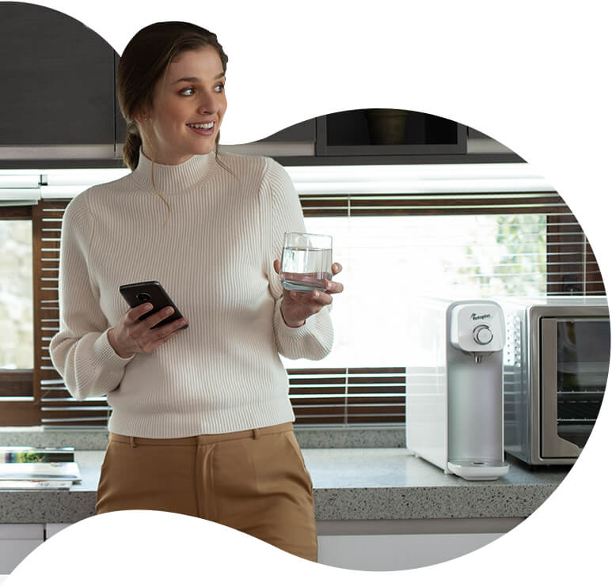

Rotoplas at a Glance
Leading company in the Americas that provides water solutions, including products and services for storing, piping, improving, treating and recycling the resource. With more than 40 years of experience in the industry and 19 plants in America, Rotoplas operates in 14 countries and has a portfolio that includes 27 product lines, a service platform and an e-commerce business. Rotoplas has been listed on the Mexican Stock Exchange (BMV) under the ticker "AGUA" since December 10, 2014.
1. Sustainable growth plan: to double sales in 5 years
2020-2025 plan:
- 2x sales (vs 2020)
- Adj. EBITDA Margin ≥ 20%.
- Leverage Net Debt / Adj. EBITDA ≤ 2.0x
- ROIC ˜20%.
2. A leader in sustainability and innovation - Rotoplas operates sustainably and partners with its clients to reduce their environmental impact
- Through its products and services, Rotoplas promotes the population’s resilience against climate change and water scarcity
- Rotoplas develops solutions to help customers become more sustainable by replacing plastic bottles with bebbia, a residential purification service, or water reuse via water treatment plants to avoid groundwater contamination.
- Conscious capitalism approach: people, planet and profits are at the same level of importance.
- Rotoplas focuses on the digitalization of water, evolving the portfolio of products and services to smart solutions that use data & analytics for more efficient water use.
- In 2017, Rotoplas became the first company to issue a sustainable bond in Latin America.
- AGUA* is part of the DJSI MILA Pacific Alliance and BMV Total Mexico ESG sustainable indices.
3. Clear climate change and diversity goals
- Net zero carbon emissions by 2040
- Increase the participation of women in the workforce from 23% to 30% by 2025
4. Transformation story: Rotoplas doubled its ROIC in 2 years
- In August 2019, Rotoplas launched a transformation program called Flow.
- Flow’s main objective: increase ROIC and create economic value while maintaining a positive impact on society and the environment.
- From June 2019 to September 2021, ROIC increased by 7.8 percentage points, from 7.9% to 14.5%.
- Flow evolved from a transformation program to how Rotoplas operates everyday.
5. Rotoplas pays dividends annually, despite being a growing company
- Through reimbursements in cash and in kind, Rotoplas has paid its shareholders a yield greater than 7% in the last two years.
- Over the past 6 years, Rotoplas has paid annual capital reimbursements of at least MXN $0.20.
Why invest in Rotoplas?
- High growth potential in the global water industry, especially in the face of climate change and water scarcity
- High demand for decentralized water solutions due to water infrastructure outpaced by population growth in the Americas
- Clear and achievable strategy based on the 2021-2025 Sustainable Growth Plan
- Holds leading brands in the 14 countries where it operates
- Tripartite value creation: profit, people, and the planet
- Strong balance sheet and low level of leverage
- Experienced leadership team with a proven track record